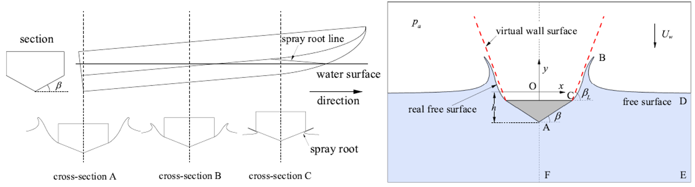

Formulations of hydrodynamic force in the transition stage of the water entry of linear wedges with constant and varying speeds

Abstract
The slamming and transition stages are the most important for the water entry of wedges, in which the wedges experience the main hydrodynamic forces. The slamming stage is fully investigated by analytical methods, while there are few formulations for the transition stage where the spray root exceeds the top of wedge. Motivated by that, this paper numerically studies the transition stage of the water entry of linear wedges with constant and varying speeds, with assumptions that the fluid is incompressible, inviscid and with negligible effects of gravity and surface tension, and the flow is irrotational. For the constant speed impact, the similitude of the declining forces between different deadrise angles in the transition stage is found by scaling the differences between the maximum values in the slamming stage and the results of steady supercavitating flow. The hydrodynamic force is formulated based on the similitude of the declining forces in the transition stage together with the linear increasing forces in the slamming stage. For the varying speed impact, the hydrodynamic force component caused by the acceleration effect in the transition stage is formulated by an added mass coefficient with an average increase of 27.13% compared with that of slamming stage. Finally, a general expression of the hydrodynamic forces in both the slamming and transition stages is thus proposed and has good predictions in the range of deadrise angles from 5° to 70° for both the constant and varying speed impacts.
Read the published article ↗